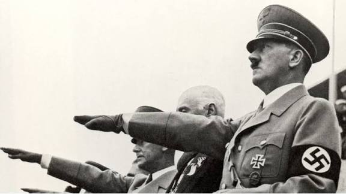

a queda do imperio nazista

O Império Nazista (também conhecido como Terceiro Reich) chegou ao fim em maio de 1945, durante a reta final da Segunda Guerra Mundial. A queda ocorreu após a invasão de Berlim pelas forças aliadas e foi marcada por dois eventos principais:
Avançando nos Projetos

Os principais países que formaram a aliança dos Aliados na Segunda Guerra Mundial foram a Grã-Bretanha (Reino Unido), a França (representada pela Resistência da França Livre), a União Soviética (URSS), os Estados Unidos e a China